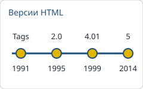
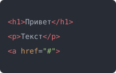
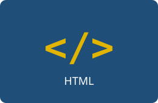

История создания

HTML (HyperText Markup Language, «язык гипертекстовой разметки») придумал британский учёный Тим Бернерс-Ли в европейской лаборатории CERN. В 1989 году он предложил систему связанных документов для обмена научной информацией, а первый сайт заработал в 1991 году.
Основой послужил язык SGML. Первое описание под названием «HTML Tags» появилось в и содержало около 18 элементов. Для разработки стандартов в 1994 году создали консорциум W3C.
Этапы развития
- 1991 год: первое описание языка и первый веб-сайт.
- 1995 год: HTML 2.0, первый официальный стандарт (RFC 1866).
- 1997 год: HTML 3.2 с таблицами, а затем HTML 4.0 и 4.01 (1999).
- 2000 год: XHTML 1.0, попытка совместить HTML и XML.
- 2014 год: HTML5 становится рекомендацией W3C, с 2019 года стандарт ведёт WHATWG.

| Версия | Год | Что нового |
|---|---|---|
| HTML Tags | 1991 | Первое описание, ссылки и заголовки |
| HTML 2.0 | 1995 | Первый стандарт, формы (form) |
| HTML 3.2 | 1997 | Таблицы, обтекание изображений |
| HTML 4.01 | 1999 | Отделение оформления через CSS, доступность |
| HTML5 | 2014 | Семантические теги, audio, video, canvas |
Краткий обзор языка
HTML это язык разметки, а не язык программирования: он описывает структуру и смысл страницы, но не содержит логики вычислений. Документ состоит из элементов, которые записываются тегами, а у тегов бывают атрибуты. Браузер читает разметку и строит из неё дерево DOM1.
HTML задаёт структуру страницы, CSS отвечает за внешний вид, а JavaScript за поведение.
Особенности
- Теги и атрибуты, вложенные друг в друга.
- Гиперссылки между документами.
- Семантические элементы:
header,nav,main,footer. - Формы, таблицы, изображения, аудио и видео.
Где применяют
- Сайты и веб-приложения.
- Шаблоны электронных писем.
- Документация и электронные книги.
- Интерфейсы настольных приложений.

Подробнее читайте в стандарте WHATWG, на MDN и в Википедии. Примеры разметки смотрите в разделе «Примеры кода», а хронологию в разделе «История создания».
1 DOM (Document Object Model) это объектная модель документа.
Примеры кода
Сохраните пример в файл с расширением .html и откройте его в браузере. Цвета подсветки взяты из темы One Dark.
Минимальная страница
<!DOCTYPE html>
<html lang="ru">
<head>
<meta charset="UTF-8">
<title>Моя страница</title>
</head>
<body>
<!-- Заголовок -->
<h1>Привет, мир!</h1>
</body>
</html>Список, ссылка и картинка
<ul class="menu">
<li><a href="index.html">Главная</a></li>
<li><a href="https://html.spec.whatwg.org/" target="_blank">Стандарт</a></li>
</ul>
<img src="logo.png" alt="Логотип" width="100">Оформление через CSS
/* Стили для заголовка */
h1 {
color: #1f4e79;
font-size: 24px;
}
.menu a:hover {
text-decoration: underline;
}Использованные теги и свойства
HTML-теги (42)
a abbr blockquote body caption code em figcaption figure footer h1 h2 h3 head header hr html img kbd li link main mark meta nav ol p pre section small span strong sup table tbody td th thead time title tr ul
CSS-свойства (52)
background background-color border border-bottom border-collapse border-left border-radius border-top box-shadow caption-side clear color content cursor display flex-wrap float font-display font-family font-size font-style font-weight gap height hyphens letter-spacing line-height list-style list-style-image list-style-type margin margin-left margin-right margin-top max-width object-fit outline overflow overflow-x padding padding-bottom padding-left padding-top scroll-behavior src tab-size text-align text-decoration transition vertical-align white-space width